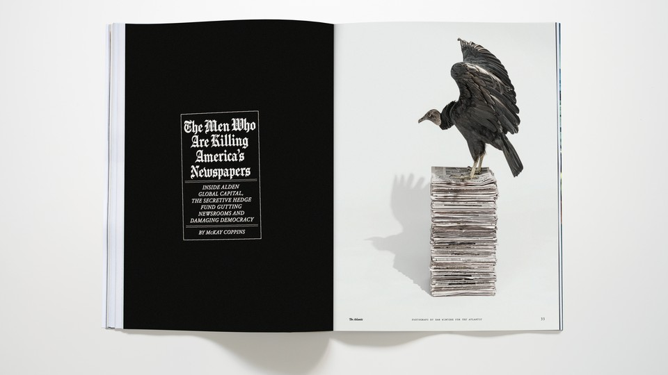

| 文章 | 章节 | 下一项 |
The Story of Alden Global Capital Illustrates Deep American Problems
Readers respond to our November 2021 cover story and more.

The Men Who Are Killing America’s Newspapers
In November, McKay Coppins wrote about Alden Global Capital, the secretive hedge fund gutting newsrooms and damaging democracy.
I’m from Chicago originally and still a close reader of the Tribune. It’s astonishing how bad things have gotten for a once-vibrant institution. The pages are thinner. Associated Press wire stories have replaced original reporting. There are spelling errors throughout.
I keep asking myself one question as more and more local and regional news outlets face cuts or fall completely: How do people know what’s going on in their own backyard?
I think the answer is that they really don’t, or they get their news from distorted sources. Some of my friends and family now get their Chicago coverage only from cable news or the latest viral Facebook post. Usually, it’s painting the city as a crime-ridden hellhole or bashing the mayor for something partisan—no local nuance, no analysis, just a selective distortion of what’s happening on the ground. Many of those same people used to get their news from the Trib’s center-right perspective. Now they get it from national outlets that couldn’t care less about their city.
Alden Global Capital’s track record has already shown that it is perfectly willing to destroy one of America’s most storied papers for a quick buck. It’s a shame no civic-minded, wealthy Chicagoan stepped up to save the paper from its slow but certain death, and the city is worse off because of that.
Patrick Wohl
Washington, D.C.
The growing prevalence of personalities like Randall Duncan Smith and companies like Alden Global Capital showcases the deep problems the United States is facing. Do we really value this kind of unbridled capitalism? How is it that we—by way of elected officials—tolerate behavior that is so destructive to our way of life?
Morgan Pawlak
Oak Park, Ill.
Alden deserves the scorn it gets for its brutish (but profitable) approach. But American journalism faces a crisis bigger than nefarious hedge funds.
The real problem comes from the fall of America as a republic of letters. American civic education hasn’t emphasized the vital role of journalism as the fourth estate, as important to the good society as the separation of powers or checks and balances in the federal government.
Now, Americans don’t pay for news anymore and don’t fund the local papers that kept communities intact and local governments in line.
Yes, Alden is killing off papers left and right. But why does the hedge fund buy these papers? Because previous owners didn’t see a viable future thanks to an apathetic public. The media industry isn’t blameless. But the problem goes deeper than the journalistic failures of recent years …
To save [the newspaper industry], we’ll need an effort of renewal to restore local institutions and to restore respectability to journalism.
Anthony Hennen
Excerpt from a
National Review article
The Atlantic’s report highlights an important threat to journalism and civic awareness. But you overstate the impact on the Chicago Tribune. The Trib’s all-pro journalists, such as the veteran investigator Ray Long, continue to break major stories of political corruption. And the Springfield capitol bureau is staffed once again. The truth is bad enough. You shouldn’t make it even worse.
Loren Wassell
St Louis, Mo.
Every day I read the Hartford Courant, one of the papers that Alden Global Capital owns. Many people in Connecticut are concerned about the ongoing dismantling of the Courant, the oldest continuously published newspaper in the United States. However, we already have an alternative: a digital, nonprofit newspaper immune to the depredations of vultures. The Connecticut Mirror is now more than 10 years old, providing indispensable news to the public, not to mention state and local government. I read it every day alongside the Courant.
Toni Gold
Hartford, Conn.
McKay Coppins’s article is troubling for the non-billionaires among us, which is why it’s so important to acknowledge the organizations that are fighting to provide our communities with local accountability. Here in Illinois, ProPublica and the outlets that make up the Chicago Independent Media Alliance are rising stars in the shadow of the Chicago Tribune.
Many of my favorite news resources today are nonprofits that rely on the support of their readers for revenue. I may not have the funds to buy out Alden Global Capital’s newspaper empire, but I hope that other readers will make it their mission to help a local news site thrive in whatever small way they are able.
Ben Suazo
Chicago, Ill.
McKay Coppins replies:
To respond to Loren Wassell’s letter: There’s no doubt that the Tribune’s journalists continue to work heroically under adverse conditions to keep their readers informed. But when a paper loses a quarter of its newsroom virtually overnight, its quality will inevitably suffer, as I believe my reporting demonstrated. Those who remain in the Trib’s shrinking newsroom deserve credit. They—and their city—also deserve better management than Alden has provided.
The New Meth
The drug is creating a wave of mental illness and contributing to homelessness. In November, Sam Quinones reported on how it spread and what it’s doing to people.
Thank you for the excellent article on meth use. I’ve worked with crime victims for many years and seen the devastation that meth and other drugs cause victims, offenders, and the community at large. My local elected officials have swallowed hook, line, and sinker the idea that drug distribution is “victimless.” Hopefully many people will read Sam Quinones’s work, and a wider recognition of the need to both offer treatment and protect society will take root.
Kirsten Logan
Denver, Colo.
Sam Quinones’s article confirmed what I know all too well as a family- and addiction-medicine physician working in Portland, Oregon. We have lost the War on Drugs, and we will be tallying the casualties for generations to come. Being on the I-5 corridor has kept the Pacific Northwest on the leading edge of the innovative, highly addictive, synthetic drugs manufactured by drug cartels. The devastation for our families and communities is laid out before us on the streets. And there seems to be no end in sight.
Now is the time for a fresh approach to the problems of illicit drugs and their effect on the health and wellness of our communities. Substance-use disorders, like many other chronic medical problems, are largely a result of system failures, including delayed intervention. Though many initially turn to illicit drug use as a means of coping with trauma, at a certain point, the unhealthy behavior is not a choice. It is time to decriminalize the behavior of using drugs.
Mr. Quinones makes another important point. If we desire healthy, vibrant communities rooted in peace, social justice, and sustainability, then we cannot turn away from these faces of “living addiction.” We will need extraordinary outreach for those who are already marginalized because of mental-health issues, including substance-use disorders. After all, a community is only as strong as its most vulnerable member.
Christine Gray, M.D.
Portland, Ore.
Behind the Cover
In this month’s issue, Barton Gellman reports on the forces that led to the January 6, 2021, riot at the U.S. Capitol and looks ahead to 2024, arguing that the events that transpired a year ago were just a warm-up. The hand-scrawled cover line offers an urgent warning. On some occasions, typography speaks louder than any image could.
Paul Spella, Senior Art Director
This article was downloaded by calibre from https://www.theatlantic.com/magazine/archive/2022/01/the-commons/620840/
| 文章 | 章节 | 下一项 |